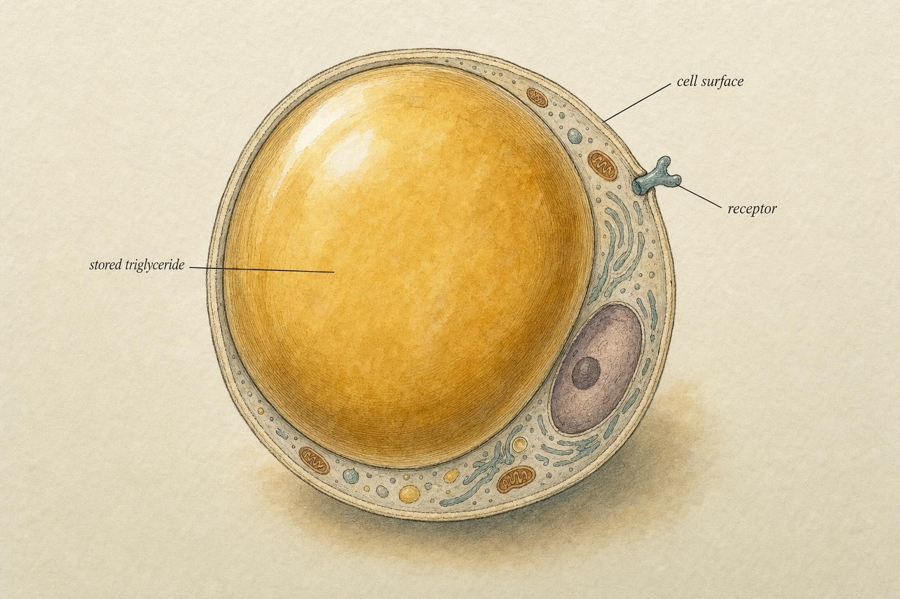
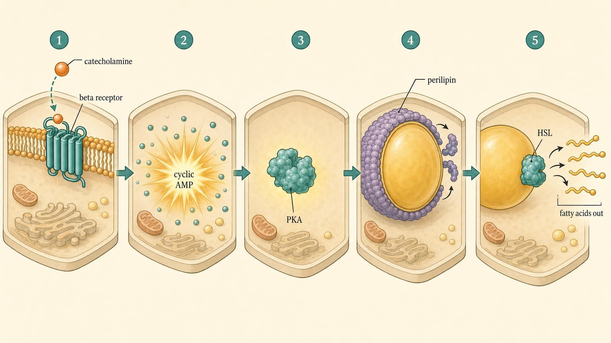
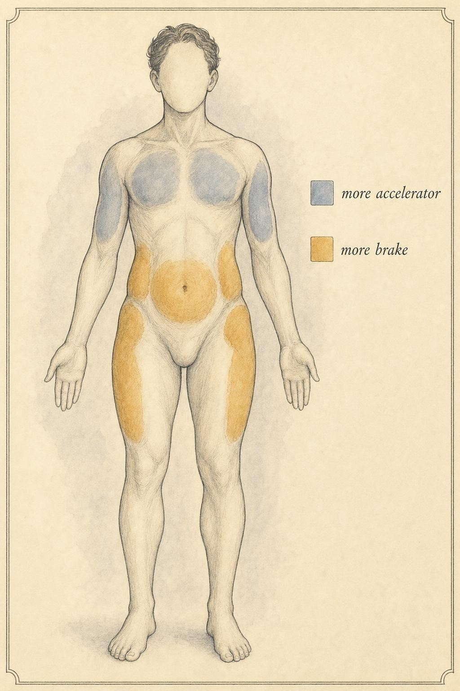

Inside the Fat Cell: The Lipolysis Machine
How a fat cell releases its fuel, and why some depots refuse to let go.
Priya kept a spreadsheet. Body weight, waist measurement, a photo taken every Sunday under the same bathroom light, four training sessions a week logged to the minute, and a food log that had not missed a day in five months. By any honest reading of the data, the plan was working. Her face had thinned. Her collarbones had returned. Her arms, which she had once described as her worst feature, had become the part of her body she was proudest of. And yet the photo grid told a second story running underneath the first: from the waist down, almost nothing had changed. The hips, the outer thighs, the back of the glutes, the same soft curve in month one and month five, while everything above it had reorganized itself completely.
Priya is not unusual, and she is not doing anything wrong. She is a stand-in for one of the most common, and most misunderstood, experiences in body recomposition: the same effort, the same discipline, the same physiology on paper, producing a result that is dramatically uneven across the body. She had read enough forum posts to have a working theory, and the theory blamed her. Slow metabolism. Hormonal damage. Just genetics, as if that settled the matter and closed the conversation. None of those explanations are wrong so much as they are too vague to be useful. They describe a feeling, not a mechanism. This chapter replaces the feeling with the mechanism, and by the end of it you will be able to look at Priya's spreadsheet and explain, in specific molecular terms, exactly why her hips lagged while her face and arms led.
The explanation lives inside a single fat cell, at a single membrane, in a competition between two receptor systems that most people have never heard named. It is not a metaphor and it is not a euphemism for laziness. It is a receptor-distribution and blood-flow problem written into specific patches of tissue, and it is measurable with the same rigor you would use to measure a heart rate. To understand it, and to understand nearly every advanced tool this course will evaluate later, you first have to open the fat cell and watch the machine work.
Why this is the chapter everything else points back to
Almost every advanced fat-loss tool you have heard argued about, caffeine, cold exposure, yohimbine, green tea catechins, beta-agonists, fasted training, is ultimately a way of pushing on, or releasing a brake within, one single pathway. That pathway is lipolysis: the enzymatic breakdown of stored triglyceride into fatty acids that can leave the fat cell and be burned elsewhere in the body. Nothing about a supplement label, a training protocol, or a fasting window matters until you can trace what it is actually doing to this pathway.
If you carry one diagram out of this entire course, make it this one. When we later ask whether a given tool is worth the money or the effort, the honest answer always comes down to a single question: which step in this cascade does it touch, and how meaningfully? A tool that nudges a step which was never the bottleneck is a tool that will disappoint you no matter how persuasive the marketing is. So we are going to build the map carefully, once, in full, and then we will point back to it again and again for the rest of the course.
Here is the promise for the next seventy minutes. By the end, you will be able to trace the complete cascade from an arriving hormone to a released fatty acid, explain the tug-of-war between two opposing receptor families in plain language, and predict, region by region, where that machinery can be nudged and where it stubbornly cannot. That is the reference framework the rest of the course is built on, and it is the framework that will finally give Priya's spreadsheet a real explanation.

The adipocyte is mostly a fuel tank. The machinery that empties it lives in the thin rim around the droplet." data-image-idx="0" style="display:block;max-width:100%;max-height:75vh;height:auto;width:auto;margin:0 auto;cursor:pointer;">A one-minute refresher on what a fat cell is
A white fat cell, the adipocyte, is close to a balloon full of oil. The bulk of its interior is a single large lipid droplet made of triglyceride, which is simply a glycerol backbone with three fatty acid chains attached to it. Picture glycerol as a small three-pronged fork, and the fatty acids as three long chains hanging off the prongs. That assembled form is the storage form. It is compact, chemically stable, and it cannot leave the cell as long as it stays fully assembled. The cytoplasm, the machinery, the nucleus, all of it gets pushed to a thin rim around the outside, which is why a fat cell under a microscope looks almost entirely empty.
To get fuel out, the cell has to cut those three fatty acids off the glycerol backbone one at a time. Once freed, a fatty acid can cross the cell membrane, travel through the blood bound to a carrier protein called albumin, and be taken up by muscle, liver, or other tissue that actually has the machinery to burn it for energy. Nothing gets burned inside the fat cell itself. The fat cell is a warehouse, not a furnace, and that single sentence resolves a surprising amount of confusion in fat-loss discussions.
Here is why the distinction matters more than it looks. A great deal of muddled thinking in fat-loss circles comes from blurring two separate events: releasing fatty acids from storage, which is lipolysis, and actually oxidizing those fatty acids for energy somewhere else in the body, which is a different process entirely. A tool can raise the first without meaningfully changing the second. In that case the freed fatty acids simply circulate, fail to find a tissue burning enough energy to use them, and get re-esterified, meaning reassembled back into triglyceride and shuttled right back into storage, sometimes in the very cell they left. Keep those two ideas, release and use, firmly separated in your head, and a great deal of contradictory-sounding marketing suddenly resolves into something coherent.
One more piece of vocabulary before we move on. Fat is not stored in one uniform blob. It lives in distinct depots, regional collections of adipose tissue with their own blood supply, their own local hormone exposure, and, as you are about to learn, their own receptor makeup. Abdominal fat under the skin, the fat around the internal organs known as visceral or omental fat, and the fat over the hips and thighs are not interchangeable tissue types performing the same job identically. They are neighborhoods within the same city, and each neighborhood runs by slightly different local rules even though the same citywide signals reach all of them.
The signal: catecholamines arrive at the door
Lipolysis does not simply happen on its own. It is commanded. The primary command molecules are the catecholamines, chiefly adrenaline, also called epinephrine, and noradrenaline, also called norepinephrine. These are the same molecules you associate with stress, cold exposure, hard exercise, and fasting, and that overlap is not a coincidence. Those are precisely the situations in which the body benefits from having stored fuel released into circulation.
Catecholamines reach a fat cell by two routes. Some arrive through the bloodstream, released mainly from the adrenal medulla, having traveled from a gland near the kidney to wherever the blood happens to carry them. Others arrive locally, released directly onto the fat cell by sympathetic nerve endings that thread through adipose tissue like a private wiring system, delivering noradrenaline right at the source without needing to pass through general circulation at all. According to de Glisezinski and colleagues (2009), when researchers selectively blocked the exercise-induced rise in circulating adrenaline while leaving noradrenaline signaling intact, fat release from subcutaneous tissue during exercise still proceeded largely unaffected, which tells you the local nerve-delivered signal and the circulating hormonal signal are not redundant copies of the same message. They are two separate delivery channels feeding the same machine, and either one, under the right conditions, can carry enough command to get the job done.
When a catecholamine reaches an adipocyte, it does not enter the cell. It docks onto proteins studding the outer membrane called adrenergic receptors, or adrenoceptors. This is the decision point of the entire system, and it is the single fact that makes this chapter worth seventy minutes of your attention. There is more than one kind of adrenoceptor sitting on the same cell surface, and, crucially, they do not all give the same instruction.
Two families of switch, pulling in opposite directions
According to Lafontan and Berlan (1993), five distinct adrenoceptor subtypes participate in the adrenergic control of fat cell function, but for our purposes they sort neatly into two functional families that behave like opposing switches.
The beta-adrenergic receptors, which come in three closely related forms called beta-1, beta-2, and beta-3, are the accelerators. When a catecholamine binds a beta receptor, it turns the lipolytic machine on. The alpha-2-adrenergic receptors are the brakes. When a catecholamine binds an alpha-2 receptor instead, it turns the machine down. Read that again, because it is the single most important sentence in this chapter: the exact same hormone molecule can either release fat or actively block its release, depending entirely on which receptor it happens to land on when it arrives. A smaller family, the alpha-1 receptors, plays a more minor and largely separate role in white fat, chiefly in calcium signaling rather than the cyclic AMP pathway that governs lipolysis, so we will set it aside and keep our attention on the beta versus alpha-2 contest, which is the one that actually decides how much fat leaves a given cell.
That split is not a design flaw. It is a control system. By varying how many accelerators versus brakes sit on a given fat cell, the body can make one patch of tissue eager to give up fuel and a neighboring patch reluctant to give up any, even though both patches are bathed in an identical hormone signal at the identical moment. Hold onto that idea. It is the entire explanation for the pattern Priya saw in her spreadsheet, and we will develop it in full detail later in this chapter.
Inside the cell: cyclic adenosine monophosphate is the messenger
Say a catecholamine binds a beta receptor. What happens next? The receptor itself cannot reach across the cell to the lipid droplet, so it has to relay the instruction through an internal signaling chain, one step at a time, like a message passed hand to hand down a line of people rather than shouted across a room.
A beta receptor is coupled, on the inside face of the membrane, to a helper protein called a guanine nucleotide-binding protein, or G-protein for short. In this case it is specifically a stimulatory G-protein, abbreviated Gs. Activating the beta receptor activates Gs, and activated Gs switches on an enzyme called adenylyl cyclase. Adenylyl cyclase has one job: it manufactures a small internal signaling molecule called cyclic adenosine monophosphate, abbreviated cyclic AMP, out of the cell's own supply of ATP, the same molecule cells use as their basic energy currency.
Cyclic AMP is the second messenger, the internal announcement that says release fuel now. As cyclic AMP rises inside the cell, it activates the next player in the chain, an enzyme called protein kinase A, abbreviated PKA. PKA is the foreman of the operation. It does not cut fat itself. Instead it activates the crew that does, by attaching small phosphate tags onto key proteins, a chemical modification called phosphorylation that changes how those proteins fold and behave.
So the chain so far reads: catecholamine binds beta receptor, which activates Gs, which activates adenylyl cyclase, which raises cyclic AMP, which activates protein kinase A. Every accelerating intervention this course will later evaluate works by raising cyclic AMP, or by keeping it from being torn back down once it rises. File that fact away now, because it will explain, among other things, exactly what caffeine does at the receptor level, which we confirm in a later chapter without straying into dosing or protocol.
Cyclic AMP does not linger indefinitely once it appears. An enzyme family called phosphodiesterases, abbreviated PDEs, is constantly at work chewing cyclic AMP back down, breaking it apart so the release signal does not simply stay switched on forever. Think of adenylyl cyclase as a tap filling a sink and phosphodiesterase as the drain running at the same time. The level of cyclic AMP in the cell at any given moment reflects the balance between those two opposing rates, not either one alone. A compound that blocked phosphodiesterase would leave the tap running while plugging the drain, and cyclic AMP would climb far higher than the tap alone could ever push it. That is not a hypothetical mechanism. It is precisely how certain classic stimulant compounds nudge this system, and we will name names and grade the evidence when we get there.
The cut: hormone-sensitive lipase and its partners
Now protein kinase A is active and looking for work. Its assignment is to unlock the lipid droplet and get the cutting started. This takes three coordinated moves, and the order in which they happen matters as much as the moves themselves.
Step one: unlocking the droplet (perilipin)
In a resting fat cell, the lipid droplet is not simply sitting exposed and available. It is wrapped in a protective protein coat, chiefly a protein called perilipin. According to Brasaemle (2007), under basal, unstimulated conditions, perilipin physically restricts the access of cutting enzymes to the droplet surface, which is exactly why a resting fat cell does not leak its contents all day regardless of how much catecholamine happens to be circulating. Perilipin is the padlock on the warehouse door, and it is the most abundant protein coating the surface of a fat cell's lipid droplet.
When protein kinase A becomes active, it phosphorylates perilipin directly. That phosphorylation event changes the shape and behavior of the coat, pulling it partly aside and, at the same moment, releasing a small helper protein that perilipin had been holding in check. The droplet surface is now accessible in a way it was not a moment earlier. The padlock is off, and the two cutting enzymes waiting nearby finally have a way in.
Step two: the first cut (adipose triglyceride lipase)
For decades, the enzyme we are about to meet next was assumed to be the only one that mattered, and every textbook credited it with the entire job. Then, according to Zimmermann and colleagues (2004), a landmark discovery identified a second, earlier-acting enzyme called adipose triglyceride lipase, abbreviated ATGL, which performs the very first cut in the sequence, removing one fatty acid from the triglyceride and leaving behind a diglyceride, a fat molecule with only two fatty acid chains remaining attached to the glycerol backbone.
What made this finding genuinely surprising at the time is that ATGL was not a variant of any lipase researchers had already been studying in this pathway. It carries an unusual structural feature called a patatin domain, a motif more familiar from plant enzymes than from mammalian fat metabolism, and it turned out to be highly expressed in adipose tissue and tightly associated with the lipid droplet surface itself. The helper protein released when perilipin was phosphorylated in step one is exactly the co-activator ATGL needs to reach full activity, which is why the unlocking step and the first cut are so tightly linked in sequence. This was a genuine correction to decades of textbook material, not a minor footnote, and it is a good example of why this course grades the evidence honestly rather than repeating what was taught twenty years ago simply because it is familiar.
Step three: the rate-limiting cut (hormone-sensitive lipase)
Now the enzyme most people have actually heard of. Hormone-sensitive lipase, abbreviated HSL, is the classically recognized, rate-limiting enzyme of adipocyte lipolysis, meaning it is the slowest, most tightly controlled step and therefore the one that sets the overall pace for the whole sequence. When protein kinase A phosphorylates HSL, two things happen at once. The enzyme itself becomes more catalytically active, and, just as importantly, it physically relocates, translocating from its resting position scattered through the cytosol to the surface of the now-unlocked lipid droplet, exactly where its substrate is waiting. Location is half of activation here. An enzyme that is fully switched on but sitting in the wrong part of the cell accomplishes nothing, the same way a fully charged forklift parked in the wrong warehouse aisle does not move any boxes.
HSL takes the diglyceride left behind by ATGL and removes a second fatty acid, leaving a monoglyceride, a single fatty acid still attached to the glycerol backbone. A final enzyme, monoacylglycerol lipase, removes the last fatty acid, freeing the glycerol backbone entirely. The tally at the end: one triglyceride has become three free fatty acids plus one glycerol molecule, all of them now able to leave the cell.
The exit
The freed fatty acids diffuse out of the adipocyte and into the surrounding capillary bed, where they bind the carrier protein albumin and travel onward to tissues equipped to oxidize them for energy. Glycerol leaves through its own dedicated channel and travels mainly to the liver, where it can be converted back into glucose. The warehouse has shipped its product. That, from arriving signal to released fatty acid, is the complete lipolysis cascade, and every intervention discussed later in this course is best understood as an attempt to push on one specific link in this exact chain.

The full accelerating cascade, left to right: signal, second messenger, foreman, unlocking, cutting, exit." data-image-idx="1" style="display:block;max-width:100%;max-height:75vh;height:auto;width:auto;margin:0 auto;cursor:pointer;">The brake: what alpha-2 actually does
We have built the accelerating pathway in full. Now meet its opponent in detail, because this is where the pattern in Priya's spreadsheet actually lives.
Recall that alpha-2 receptors sit on the very same cell surface as beta receptors and respond to the very same catecholamines. The difference is entirely in what each receptor is coupled to on the inside of the membrane. Where beta receptors couple to the stimulatory Gs protein that switches adenylyl cyclase on, alpha-2 receptors couple to an inhibitory G-protein, abbreviated Gi, which switches adenylyl cyclase down. Same enzyme on the receiving end, opposite command arriving at it, depending only on which receptor caught the hormone first.
The consequence is a direct tug-of-war fought over cyclic AMP. Beta activation pushes cyclic AMP up. Alpha-2 activation pulls it back down. Because cyclic AMP is the linchpin of the entire pathway, everything downstream, protein kinase A, perilipin, hormone-sensitive lipase, tracks whatever the net cyclic AMP level ends up being once both signals have had their say. If a given fat cell carries many alpha-2 brakes relative to beta accelerators, then even a strong catecholamine signal produces only a modest rise in cyclic AMP, and therefore only weak lipolysis. The signal arrived in full strength. The cell, on balance, declined the instruction.
There is a second brake working alongside alpha-2, and it is worth naming because it explains why fasted states matter so much to this whole system. Insulin, acting through its own separate receptor, activates an enzyme called phosphodiesterase 3B, abbreviated PDE3B, which is one of the specific phosphodiesterases mentioned earlier, the drain that chews cyclic AMP back down. This is a distinct route from alpha-2, arriving through an entirely different receptor, but it lands on the exact same target. When insulin is elevated, as it typically is after a carbohydrate-containing meal, cyclic AMP gets suppressed through this second channel regardless of what the catecholamines are doing at the beta and alpha-2 receptors. This is one reason fasted or low-insulin states tend to be more permissive of lipolysis than fed states carrying a fresh insulin spike. The fat cell is not simply reading one instruction. It is averaging several instructions arriving from different directions at once.
This is worth stating flatly because it corrects a common misconception. Stubborn fat is not tissue that fails to get the signal. It receives the identical signal reaching everything else in the body. It has simply been wired, at the receptor level, to respond to that signal with a foot already resting on the brake.
The physiology of stubborn fat
Now we can explain the phenomenon that opened this chapter with real mechanism instead of frustration, and give Priya's spreadsheet an actual answer.
Regional receptor ratios are measurable, not imagined
Different fat depots carry genuinely different ratios of beta to alpha-2 receptors, and this has been measured directly in human tissue, not inferred from appearance or assumed from anecdote. According to Mauriege and colleagues (1987), when researchers sampled adipocytes from abdominal, femoral, meaning thigh and hip, and internal, or omental, fat depots, they found a striking pattern: in subcutaneous fat cells taken from both the abdominal and femoral sites, alpha-2 binding sites outnumbered beta binding sites by roughly three to two. In fat cells taken from the internal, omental depot, the ratio flipped, with beta sites at least as numerous as alpha-2 sites. The functional consequence tracked the receptor counts precisely: adrenaline actually suppressed lipolysis in femoral fat cells at low concentrations, produced a mixed inhibit-then-stimulate pattern in abdominal subcutaneous cells, and remained straightforwardly lipolytic in the internal depot throughout. The stubbornness you observe in a mirror corresponds to numbers a laboratory can count on a cell membrane.
As a general pattern, the depots people describe as stubborn, lower-body subcutaneous fat in many women, lower-abdominal and flank fat in many men, tend to carry a receptor balance tilted toward alpha-2, meaning more brake relative to accelerator. Depots that lean out earliest in a diet tend to carry a balance tilted the other way, toward beta. Same person, same bloodstream, same hormone, different local wiring at the membrane.
Blood flow is the second half of the story
Receptor ratio is not the only factor working against a stubborn depot. Even a fatty acid that has been successfully cut free still has to be physically carried away by blood before it counts as fuel delivered anywhere. If a depot has sluggish local blood flow, freed fatty acids are more likely to simply linger near the cell and get re-esterified, meaning reassembled back into triglyceride and returned to storage before they ever escape into general circulation. The shipment left the loading dock and was quietly returned to the shelf.
This is not speculation drawn from indirect measures. According to Manolopoulos and colleagues (2012), in a controlled in vivo human study using local microinfusion and radioactive tracer techniques, femoral, or lower-body, adipose tissue proved markedly less responsive to physiological adrenaline than abdominal tissue, both in the rate at which it released fatty acids and in how much its local blood flow increased in response to that same adrenaline stimulus. When the researchers locally infused an alpha-blocking drug into the femoral tissue, the blood flow response reappeared, which pinned the resistance specifically on alpha-adrenergic signaling rather than on some unrelated property of the tissue. The lower-body depot resisted on two fronts simultaneously: fewer fatty acids freed per unit of catecholamine signal, and less blood flow available to carry away the ones that were freed anyway. That is a double lock, not a single one, and it is exactly why these regions tend to come off last in a body recomposition.
According to Arner (2005), this regional variation is not confined to the beta-versus-alpha-2 balance alone. Catecholamine-stimulated lipolysis is also generally higher in visceral fat than in subcutaneous fat as a baseline property of the tissue, with real downstream consequences for how fatty acids reach the liver through the portal circulation, and this same regional variability becomes more pronounced, not less, in states such as obesity. The pattern Priya is living through is not an exception to how human fat physiology works. It is close to the textbook default.
What this reframe buys you
Put together, stubborn fat is an understandable, well-documented physiological phenomenon: a local combination of a brake-heavy receptor ratio and comparatively poor blood flow, both of which blunt the response to a catecholamine signal that is, in every other respect, arriving perfectly well. It is not a moral failing, it is not a sign that a person is secretly not trying, and it is not a mysterious exception to how fat loss is supposed to work. It obeys the identical cascade as every other fat cell in the body. It simply runs that cascade with the parking brake partly engaged.
This reframe is useful in two concrete ways. First, it protects you, and anyone you happen to explain this to, from the shame spiral that causes people to abandon otherwise successful plans over a lagging region that was never going to move on the same timeline as the rest of the body. Second, it tells you precisely where a legitimate intervention would have to act to matter at all: it would have to either reduce the alpha-2 brake, raise cyclic AMP hard enough to overpower the brake despite its presence, or improve local blood flow so that freed fatty acids actually leave the tissue instead of being quietly re-stored. When we later grade specific tools in this course, we will hold every single one of them up against exactly these three levers, and nothing else.

The regional pattern is a map of receptor ratios and blood flow, not of effort." data-image-idx="2" style="display:block;max-width:100%;max-height:75vh;height:auto;width:auto;margin:0 auto;cursor:pointer;">Worked example: tracing a real morning
Let us make this concrete by walking one scenario through the entire cascade, the same way we will trace specific interventions in later chapters.
Imagine Priya does fasted, low-intensity cardio before breakfast, which is exactly the kind of session she had logged more than sixty times by the time she started asking why her hips were not responding. Fasting keeps insulin low, which means the PDE3B brake we described earlier is largely off duty. The exercise itself raises circulating catecholamines. Those catecholamines reach fat cells all over her body simultaneously and bind whatever receptors happen to be sitting on each one.
In her upper back and shoulders, a region that happens to be beta-dominant, the beta signal wins the tug-of-war comfortably. Adenylyl cyclase runs, cyclic AMP climbs, protein kinase A activates, perilipin unlocks the droplet, ATGL and HSL cut in sequence, and fatty acids pour out into brisk local blood flow that carries them off to be burned elsewhere. Across the following weeks, that region visibly changes shape.
The identical catecholamine wave, arriving in the identical fasted state, reaches her hip and outer-thigh fat at the same moment. Here the tissue is alpha-2-dominant with comparatively sluggish blood flow. The brake actively fights the accelerator, cyclic AMP rises only modestly instead of sharply, HSL is only weakly activated as a result, and the fatty acids that do manage to get freed face slow-moving local blood flow that gives many of them time to be re-esterified back into storage before they ever escape the tissue. Same hormone, same morning, same fasted state, same effort, dramatically different outcome. Nothing about Priya changed between the two depots. Only the local receptor and circulation wiring changed.
Now you can already anticipate the shape of the solutions this course will go on to evaluate. Anything that meaningfully helps a stubborn depot has to do one of three things: reduce the alpha-2 drag so the beta accelerator can finally win the local contest, push cyclic AMP up hard enough to overwhelm the brake despite its presence, or improve local blood flow so that freed fatty acids actually leave the tissue instead of drifting back into storage. Any tool that does none of these, no matter how popular it is or how confidently it is marketed, is touching a step in the cascade that was never the bottleneck in the first place.
What this framework does, and does not, tell you
Before we close, it is worth being precise about the limits of what you now know, because precision here prevents overreach later. You now understand why a fat depot resists mobilization at the cellular level. That is a mechanistic fact, verified in human tissue by direct receptor-binding studies and in vivo blood flow measurements. What you do not yet have is a ranked list of which interventions meaningfully move the needle on either the alpha-2 brake or local blood flow, and by how much. That ranking is the entire subject of the chapters ahead, and it depends on evidence quality, effect size, and honest uncertainty in a way that a single mechanism diagram cannot settle by itself. Resist the temptation to assume that because a compound or a practice is described as touching the beta receptor or the alpha-2 receptor, it therefore works meaningfully in a living person at doses people actually use. Mechanism tells you plausibility. It does not, on its own, tell you magnitude. We will hold every tool to both standards later, not just the first one.
It is also worth being honest about what this chapter cannot do for you personally. Two people with visually similar stubborn regions can have meaningfully different receptor ratios, different local blood flow, different total body fat, and different training histories, none of which can be read off a photograph or inferred from a forum post. The map in this chapter explains the phenomenon in general. It does not replace an individualized assessment of any single person's tissue, and it was never meant to.
A necessary boundary before we get to tools
This chapter has stayed deliberately narrow: mechanism only, from signal to receptor to second messenger to enzyme to exit. In later chapters, especially the survey of pharmacological levers, we will describe what specific compounds are proposed to do and which exact step of this cascade each one is intended to touch, and nothing more. We will not discuss doses, protocols, stacking strategies, or where to obtain anything. Those are clinical decisions that belong with a qualified prescriber who knows an individual's full medical picture, not with a course reading.
There is also a health point that is easy to skip past when the focus is on physique. If fat distribution changes suddenly and without an obvious cause, or if pain, swelling, or any other symptom that feels like dysfunction shows up in a region of tissue, that is a signal to seek professional evaluation, not something to interpret or self-manage based on a course reading. Nothing in this chapter is a diagnostic tool, and no amount of reading substitutes for a clinician who can actually examine the tissue in question.
Keep that boundary firm as we move forward. It protects the people around you who might ask what you have learned here, and it protects you from mistaking a mechanism diagram for a medical judgment call it was never built to make.
The same molecule that empties one fat cell will lock another. Whether a depot yields or resists is not written in the hormone. It is written in the receptors on the cell.
The central lesson of the lipolysis cascade
Key Takeaways
- Lipolysis is a commanded process: catecholamines, arriving both through the bloodstream and directly from local sympathetic nerve endings, dock on adrenergic receptors at the fat cell surface and trigger an internal cascade. Nothing gets burned inside the fat cell; it is a warehouse, not a furnace.
- Beta receptors accelerate by raising cyclic adenosine monophosphate (cyclic AMP) through a stimulatory G-protein and adenylyl cyclase; alpha-2 receptors brake by lowering cyclic AMP through an inhibitory G-protein. A second brake, insulin acting through phosphodiesterase 3B (PDE3B), lowers cyclic AMP through a completely different receptor, which is one reason fasted states favor lipolysis.
- Rising cyclic AMP activates protein kinase A (PKA), which phosphorylates perilipin to unlock the droplet and activates hormone-sensitive lipase (HSL), the rate-limiting enzyme, which then moves to the droplet to cut. Adipose triglyceride lipase (ATGL) performs the first cut, a genuine correction to the older HSL-only model of textbook lipolysis.
- Stubborn fat is a measured receptor-ratio and blood-flow phenomenon, not a lack of effort. Human tissue studies show alpha-2-to-beta ratios running roughly three to two in subcutaneous depots such as the femoral and abdominal regions, versus closer to parity in internal fat, with matching differences in local blood flow response to the same catecholamine dose.
- Every intervention graded later in this course must act on one of three levers: reduce alpha-2 drag, raise cyclic AMP hard enough to overpower the brake, or improve local blood flow. A tool touching none of these is touching a step that was never the bottleneck.
- Mechanism explains plausibility, not magnitude, and it is not a substitute for individualized assessment. Sudden distribution changes, pain, or dysfunction warrant professional evaluation, never self-diagnosis from a course reading.
You now hold the reference diagram for the whole course. In the next chapter we follow a freed fatty acid past the fat cell entirely, into the tissues that actually burn it for heat, and we examine the uncoupling machinery that decides whether that fuel becomes warmth or gets quietly stored again. From there we begin lining up specific tools against the exact cascade steps you just learned. When we grade caffeine, cold exposure, yohimbine, and beyond, we will point straight back to the accelerator, the brake, and the blood flow. Keep this map close.
References
Arner, P. (2005). Human fat cell lipolysis: Biochemistry, regulation and clinical role. Best Practice and Research Clinical Endocrinology and Metabolism, 19(4), 471-482. https://doi.org/10.1016/j.beem.2005.07.004
Ahmadian, M., Duncan, R. E., & Sul, H. S. (2009). The skinny on fat: Lipolysis and fatty acid utilization in adipocytes. Trends in Endocrinology and Metabolism, 20(9), 424-428. https://doi.org/10.1016/j.tem.2009.06.002
Brasaemle, D. L. (2007). Thematic review series: Adipocyte biology. The perilipin family of structural lipid droplet proteins: Stabilization of lipid droplets and control of lipolysis. Journal of Lipid Research, 48(12), 2547-2559. https://doi.org/10.1194/jlr.R700014-JLR200
de Glisezinski, I., Larrouy, D., Bajzova, M., Koppo, K., Polak, J., Berlan, M., Bulow, J., Langin, D., Marques, M. A., Crampes, F., Lafontan, M., & Stich, V. (2009). Adrenaline but not noradrenaline is a determinant of exercise-induced lipid mobilization in human subcutaneous adipose tissue. Journal of Physiology, 587(Pt 13), 3393-3404. https://doi.org/10.1113/jphysiol.2009.168906
Lafontan, M., & Berlan, M. (1993). Fat cell adrenergic receptors and the control of white and brown fat cell function. Journal of Lipid Research, 34(7), 1057-1091. https://www.jlr.org/article/S0022-2275(20)37695-1/fulltext
Manolopoulos, K. N., Karpe, F., & Frayn, K. N. (2012). Marked resistance of femoral adipose tissue blood flow and lipolysis to adrenaline in vivo. Diabetologia, 55(11), 3029-3037. https://doi.org/10.1007/s00125-012-2676-0
Mauriege, P., Galitzky, J., Berlan, M., & Lafontan, M. (1987). Heterogeneous distribution of beta and alpha-2 adrenoceptor binding sites in human fat cells from various fat deposits: Functional consequences. European Journal of Clinical Investigation, 17(2), 156-165. https://doi.org/10.1111/j.1365-2362.1987.tb02395.x
Zimmermann, R., Strauss, J. G., Haemmerle, G., Schoiswohl, G., Birner-Gruenberger, R., Riederer, M., Lass, A., Neuberger, G., Eisenhaber, F., Hermetter, A., & Zechner, R. (2004). Fat mobilization in adipose tissue is promoted by adipose triglyceride lipase. Science, 306(5700), 1383-1386. https://doi.org/10.1126/science.1100747